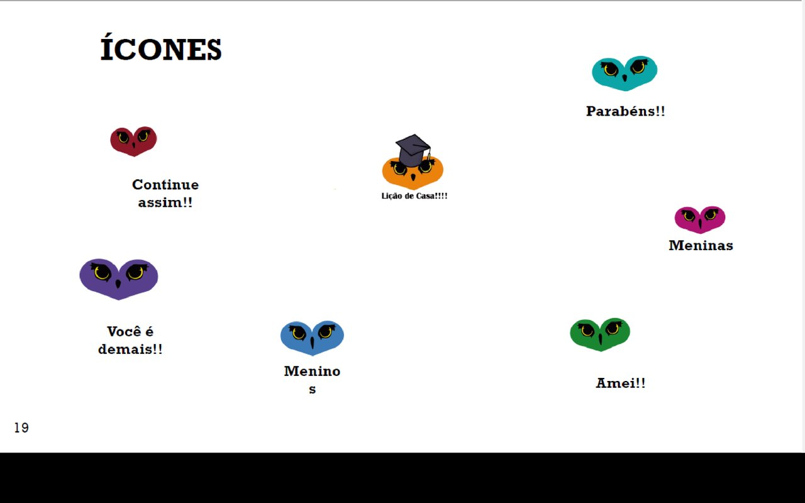
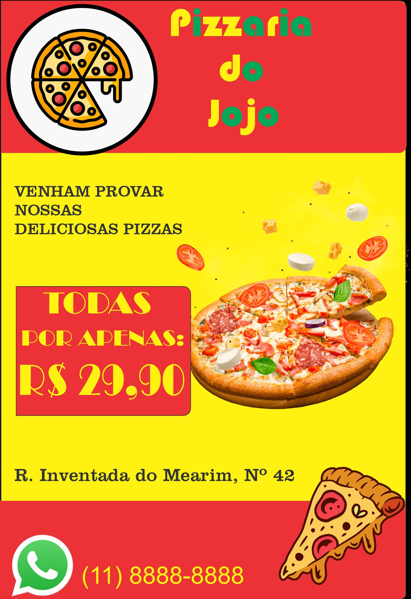
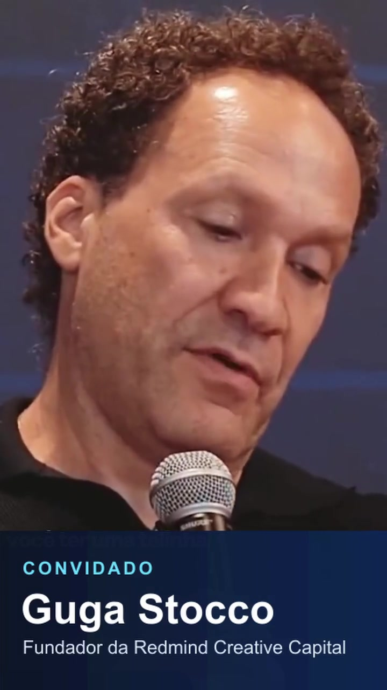
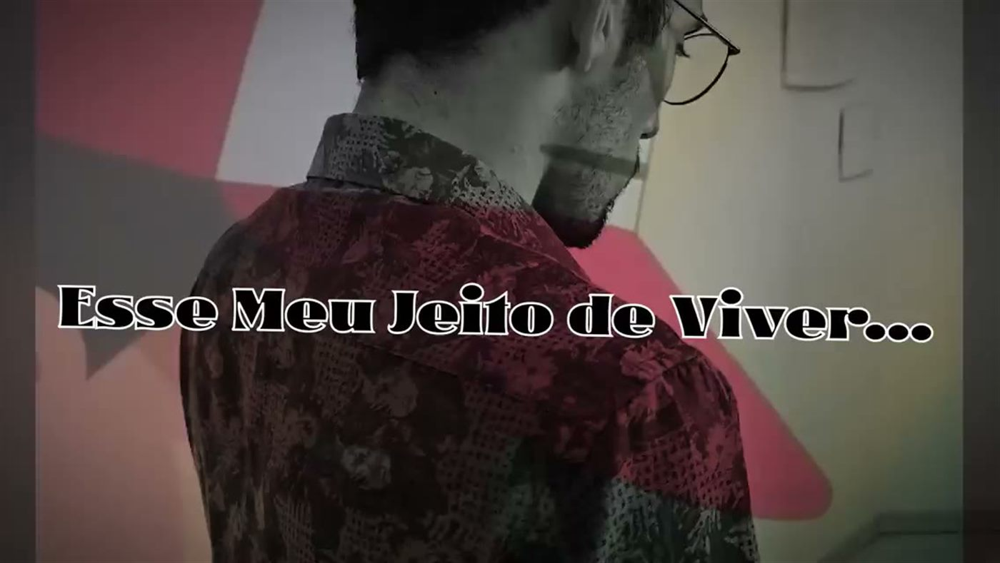
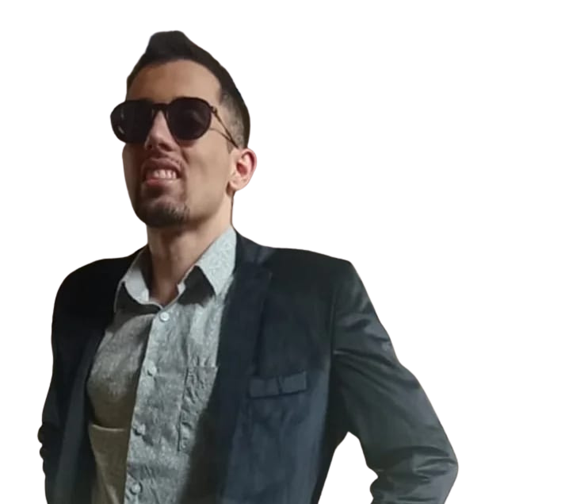

Clínica DAPP
Projeto de identidade visual e comunicação de marca.
Identidade visual, direção de arte e edição audiovisual para dar forma ao que sua marca tem a dizer.
Uma seleção de identidade visual, edição audiovisual, design de jogos e animação com IA.
Abrir vídeo completoIdentidade visual e comunicação de marca pensadas para transmitir personalidade com clareza. Do primeiro conceito às aplicações, cada escolha ajuda a construir uma presença reconhecível.

Projeto de identidade visual e comunicação de marca.

Estudo conceitual de linguagem visual para redes sociais.

Projeto audiovisual e edição.

Experimento visual em imagem e movimento.
Edição audiovisual para redes sociais.
Abrir vídeoEstudo de montagem e ritmo visual.
Abrir vídeoExperimento de linguagem para formato vertical.
Abrir vídeoProjeto audiovisual e estudo de movimento.
Abrir vídeo
Designer formado pela Universidade Presbiteriana Mackenzie, com foco em identidade visual, comunicação de marca e audiovisual. Este portfólio reúne projetos e estudos visuais desenvolvidos em diferentes formatos.
Conte um pouco sobre o que você está criando.
Conversar pelo WhatsApp